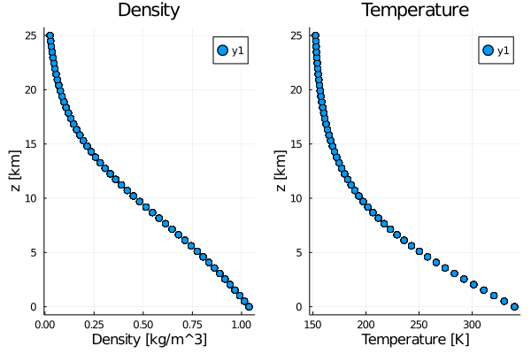
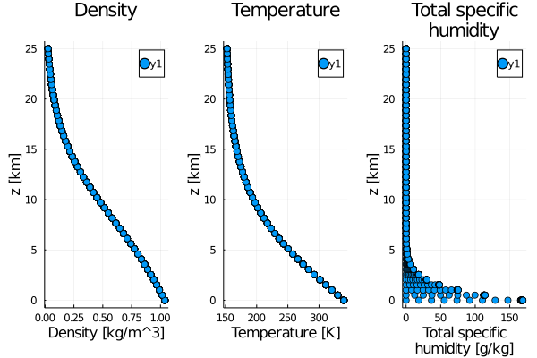
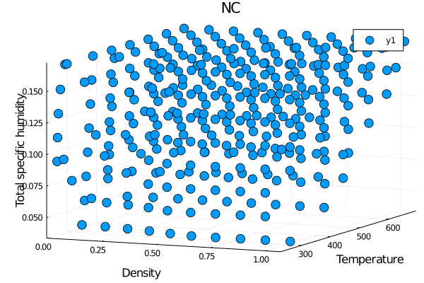
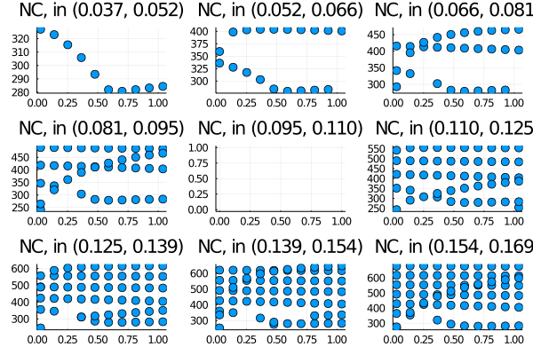

Thermodynamics Module
Thermodynamics.jl provides all thermodynamic functions needed for the atmosphere and functions shared across model components. The functions are general for a moist atmosphere that includes suspended cloud condensate in the working fluid; the special case of a dry atmosphere is obtained for zero specific humidities (or simply by omitting the optional specific humidity arguments in the functions that are needed for a dry atmosphere). The general formulation assumes that there are tracers for specific humidity q, partitioned into
q.tottotal water specific humidityq.liqliquid specific humidityq.iceice specific humidity
to characterize the thermodynamic state and composition of moist air.
There are several types of functions:
- Equation of state (ideal gas law):
air_pressure
- Specific gas constant and isobaric and isochoric specific heats of moist air:
gas_constant_aircp_mcv_m
- Specific latent heats of vaporization, fusion, and sublimation:
latent_heat_vaporlatent_heat_fusionlatent_heat_sublim
- Saturation vapor pressure and specific humidity over liquid and ice:
sat_vapor_press_liquidsat_vapor_press_icesat_shum
- Functions computing energies and inverting them to obtain temperatures
total_energyinternal_energyair_temperature
- Functions to compute temperatures and partitioning of water into phases in thermodynamic equilibrium (when Gibbs' phase rule implies that the entire thermodynamic state of moist air, including the liquid and ice specific humidities, can be calculated from the 3 thermodynamic state variables, such as energy, pressure, and total specific humidity)
liquid_fraction(fraction of condensate that is liquid)saturation_adjustment(compute temperature from energy, density, and total specific humidity)
- Auxiliary functions for diagnostic purposes, e.g., other thermodynamic
quantities * liquid_ice_pottemp (liquid-ice potential temperature)
A moist dynamical core that assumes equilibrium thermodynamics can be obtained from a dry dynamical core with total energy as a prognostic variable by including a tracer for the total specific humidity q.tot, using the functions, e.g., for the energies in the module, and computing the temperature T and the liquid and ice specific humidities (q.liq and q.ice) from the internal energy e_int by saturation adjustment.
Usage
Users are encouraged to first establish a thermodynamic state with one of our Thermodynamic State Constructors. For example, we would construct a moist thermodynamic state using
ts = PhaseEquil(param_set, e_int, ρ, q_tot);here, ρ is the density of the moist air, and the internal energy e_int = e_tot - e_kin - geopotential is the total energy e_tot minus kinetic energy e_kin and potential energy geopotential (all energies per unit mass). Once we've established a thermodynamic state, we can call Thermodynamic state methods that support thermodynamic states:
T = air_temperature(ts);
q = PhasePartition(ts);No changes to the "right-hand sides" of the dynamical equations are needed for a moist dynamical core that supports clouds, as long as they do not precipitate. Additional source-sink terms arise from precipitation.
Schematically, the workflow in such a core would look as follows:
# initialize
geopotential = grav * z
q_tot = ...
ρ = ...
(u, v, w) = ...
e_kin = 0.5 * (u^2 + v^2 + w^2)
e_tot = total_energy(e_kin, geopotential, T, q_tot)
do timestep # timestepping loop
# advance dynamical variables by a timestep (temperature typically
# appears in terms on the rhs, such as radiative transfer)
advance(u, v, w, ρ, e_tot, q_tot)
# compute internal energy from dynamic variables
e_int = e_tot - 0.5 * (u^2 + v^2 + w^2) - geopotential
# compute temperature, pressure and condensate specific humidities,
ts = PhaseEquil(param_set, e_int, ρ, q_tot);
T = air_temperature(ts);
q = PhasePartition(ts);
p = air_pressure(ts);
endFor a dynamical core that additionally uses the liquid and ice specific humidities q.liq and q.ice as prognostic variables, and thus explicitly allows the presence of non-equilibrium phases such as supercooled water, the saturation adjustment in the above workflow is replaced calling a non-equilibrium moist thermodynamic state:
q_tot, q_liq, q_ice = ...
ts = PhaseNonEquil(param_set, e_int, ρ, PhasePartition(q_tot, q_liq, q_ice));
T = air_temperature(ts);
p = air_pressure(ts);Extending
If Thermodynamics.jl does not have a particular thermodynamic constructor that is needed, you can implement a new one in src/Common/Thermodynamics/states.jl. In this constructor, you must add whichever arguments you wish to offer as inputs, then translate this thermodynamic state into one of:
PhaseDrya dry thermodynamic state, uniquely determined by two independent thermodynamic propertiesPhaseEquila moist thermodynamic state in thermodynamic equilibrium, uniquely determined by three independent thermodynamic propertiesPhaseNonEquila moist thermodynamic state in thermodynamic non-equilibrium, uniquely determined by four independent thermodynamic properties
Tested Profiles
Thermodynamics.jl is tested using a set of profiles specified in test/Common/Thermodynamics/profiles.jl.
Dry Phase
using ClimateMachine.Thermodynamics
using ClimateMachine.TemperatureProfiles
using UnPack
using CLIMAParameters
using CLIMAParameters.Planet
using Plots
struct EarthParameterSet <: AbstractEarthParameterSet end;
const param_set = EarthParameterSet();
include(joinpath(@__DIR__, repeat([".."], 4)...,"test", "Common", "Thermodynamics", "profiles.jl"))
profiles = PhaseDryProfiles(param_set, Array{Float32});
@unpack T, ρ, z = profiles
p1 = scatter(ρ, z./10^3, xlabel="Density [kg/m^3]", ylabel="z [km]", title="Density");
p2 = scatter(T, z./10^3, xlabel="Temperature [K]", ylabel="z [km]", title="Temperature");
plot(p1, p2, layout=(1,2))
savefig("tested_profiles_dry.svg");
Moist Phase in thermodynamic equilibrium
using ClimateMachine.Thermodynamics
using ClimateMachine.TemperatureProfiles
using UnPack
using CLIMAParameters
using CLIMAParameters.Planet
using Plots
struct EarthParameterSet <: AbstractEarthParameterSet end;
const param_set = EarthParameterSet();
include(joinpath(@__DIR__, repeat([".."], 4)...,"test", "Common", "Thermodynamics", "profiles.jl"))
profiles = PhaseEquilProfiles(param_set, Array{Float32});
@unpack T, ρ, q_tot, z = profiles
p1 = scatter(ρ, z./10^3, xlabel="Density [kg/m^3]", ylabel="z [km]", title="Density");
p2 = scatter(T, z./10^3, xlabel="Temperature [K]", ylabel="z [km]", title="Temperature");
p3 = scatter(q_tot*1000, z./10^3, xlabel="Total specific\nhumidity [g/kg]", ylabel="z [km]", title="Total specific\nhumidity");
plot(p1, p2, p3, layout=(1,3))
savefig("tested_profiles_virt_temp.svg")
Input space exploration
In the previous section, we plotted the tested thermodynamic states. In this section, we explore the convergence of the input space beyond what is tested. In particular, rather than being interested in physically meaningful combinations of constructor inputs (e.g., ρ, e_int, q_tot), we are interested in all permutations of inputs within a given range of ρ, e_int, q_tot. Some of these permutations may not be physically meaningful, or likely to be observed in climate simulations, but showing the convergence space helps illustrate the buffer between our tested profiles and the nearest space where convergence fails.
using ClimateMachine.Thermodynamics
using ClimateMachine.TemperatureProfiles
using UnPack
using CLIMAParameters
using CLIMAParameters.Planet
using Plots
import ClimateMachine.Thermodynamics
Thermodynamics.print_warning() = false
struct EarthParameterSet <: AbstractEarthParameterSet end;
const param_set = EarthParameterSet();
FT = Float64;
clima_root = joinpath(@__DIR__, repeat([".."], 4)...);
include(joinpath(clima_root, "test", "Common", "Thermodynamics", "profiles.jl"))
include(joinpath(clima_root, "docs", "plothelpers.jl"));
profiles = PhaseEquilProfiles(param_set, Array{FT});
@unpack ρ, e_int, q_tot = profiles
dims = (10, 10, 10);
ρ = range(min(ρ...), stop=max(ρ...), length=dims[1]);
e_int = range(min(e_int...), stop=max(e_int...), length=dims[2]);
q_tot = range(min(q_tot...), stop=max(q_tot...), length=dims[3]);
ρ_all = Array{FT}(undef, prod(dims));
e_int_all = Array{FT}(undef, prod(dims));
q_tot_all = Array{FT}(undef, prod(dims));
linear_indices = LinearIndices((1:dims[1], 1:dims[2], 1:dims[3]));
TS = Array{Union{ThermodynamicState, Nothing}}(undef, prod(dims));
TS_no_err = Array{ThermodynamicState}(undef, prod(dims));
@inbounds for i in linear_indices.indices[1]
@inbounds for j in linear_indices.indices[2]
@inbounds for k in linear_indices.indices[3]
p = linear_indices[i, j, k];
ρ_all[p] = ρ[i];
e_int_all[p] = e_int[j];
q_tot_all[p] = q_tot[k];
Thermodynamics.error_on_non_convergence() = false
TS_no_err[p] = PhaseEquil(param_set, e_int[j], ρ[i], q_tot[k]);
Thermodynamics.error_on_non_convergence() = true
# @show p/prod(linear_indices.indices)*100
try
TS[p] = PhaseEquil(param_set, e_int[j], ρ[i], q_tot[k]);
catch
TS[p] = nothing
end
end
end
end
# Full 3D scatter plot
function save_masked_plot3D(TS_no_err, mask, title, filename)
ρ_mask = ρ_all[mask];
T_mask = air_temperature.(TS_no_err[mask]);
q_tot_mask = q_tot_all[mask];
pts = (ρ_mask, T_mask, q_tot_mask)
Plots.plot(pts..., seriestype=:scatter, markersize = 7)
plot!(xlabel="Density",
ylabel="Temperature",
zlabel="Total specific humidity",
title="$title")
savefig(filename)
end;
save_masked_plot3D(TS_no_err, TS .== nothing, "NC", "Scatter3DNonConverged.svg");
save_masked_plot3D(TS_no_err, TS .!= nothing, "C", "Scatter3DConverged.svg");
# 2D binned scatter plots
function save_masked_plot2D_slices(TS_no_err, mask, title, filename)
ρ_mask = ρ_all[mask];
T_mask = air_temperature.(TS_no_err[mask]);
q_tot_mask = q_tot_all[mask];
save_binned_surface_plots(ρ_mask, T_mask, q_tot_mask, title, filename)
end;
save_masked_plot2D_slices(TS_no_err, TS .== nothing, "NC", "Slices2DNonConverged.svg");
save_masked_plot2D_slices(TS_no_err, TS .!= nothing, "C", "Slices2DConverged.svg");
@warn "Note that the temperature axis for the non-converged
plot is not necessarily accurate, since the temperatures are
the result of a non-converged saturation adjustment"┌ Warning: Note that the temperature axis for the non-converged │ plot is not necessarily accurate, since the temperatures are │ the result of a non-converged saturation adjustment └ @ Main.##ex-#380 none:2
Converged cases (3D view)

Non-converged cases (3D view)

Converged cases (2D view), binned by total specific humidity

Non-converged cases (2D view), binned by total specific humidity
